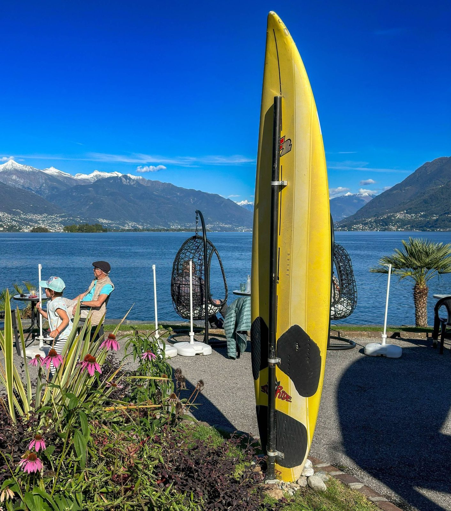

Es gibt Orte, die brauchen keinen Lärm, um zu beeindrucken. Locarno und Ascona gehören dazu. Hier am Lago Maggiore tickt die Uhr langsamer — nicht kaputt, einfach entspannter. Großer Unterschied.
Der See glitzert. Das ist keine Metapher, das ist Tatsache. Morgens um acht steht Dunst über dem Wasser, die Berge sind noch blass, und das einzige Geräusch kommt von einer Kaffeemaschine irgendwo am Ufer. Das Leben hier ist keine Choreografie wie in Tokio — es ist ein einziger, lang gezogener Atemzug. Ich habe zwei Tage gebraucht, um mitzuatmen. Danach wollte ich nicht mehr aufhören.
Zwischen Palmen und Sakralbauten
Locarno ist das rustikale Gegenstück zum mondänen Ascona. Während Locarno mit seiner Piazza Grande und den engen Gassen noch echtes Tessiner Leben atmet, flaniert Ascona in weißen Leinenhemden die Promenade entlang. Beide teilen sich denselben See, dieselbe Sonne und dieselbe Faulheit, die hier ganz offiziell als Tugend durchgeht. Ich habe mich sofort eingebürgert gefühlt.
Das Herzstück ist die Madonna del Sasso, das Wallfahrtsheiligtum hoch über Locarno. Der Blick von dort oben — über Dächer, über den See, bis zu den verschneiten Gipfeln — erklärt alles ohne ein einziges Wort. Warum hier jeder langsamer wird. Warum das Hier und Jetzt plötzlich reicht.
Die Kunst des Nichtstuns
In Locarno und Ascona zu essen bedeutet: sitzen bleiben. Der Espresso dauert seine fünf Minuten, der Aperitivo seine zwei Stunden, und niemand schaut auf die Uhr, weil das als unhöflich gegenüber dem See gelten würde. Keine Sterneküche, die sich inszeniert — sondern Grottos, wo der Wirt selbst kocht und dir erzählt, woher der Käse kommt. Die Risotti cremig, die Fische frisch vom Boot, der Wein aus dem Tal hinterm Haus.
„Im Tessin isst man nicht, um satt zu werden. Man isst, um stillzusitzen und zuzuschauen, wie das Licht sich über dem See bewegt."
Warum ich wiederkomme
Der erste Besuch war Urlaub. Der zweite ist Heimkommen. Ich habe mich am Golfplatz in Ascona versucht, ein paar Bälle geschlagen, den Blick auf die Berge genossen — und festgestellt, dass Golf mit Bergpanorama ungefähr doppelt so gut funktioniert wie mein Schwung. Der Ball ist klein, das Ego groß, und das Alpenpanorama gnädig.




Was bleibt? Das Gefühl, dass Zeit nicht gleich Zeit ist. Dass 48 Stunden hier mehr wert sind als eine Woche woanders. Dass man nachts um elf noch draußen sitzt, ohne zu frieren, und niemand fragt, was du den ganzen Tag gemacht hast. Weil die Antwort eh lautet: nichts. Und das ist völlig in Ordnung.
Mein Rat? Komm mit leeren Händen. Handy ins Hotel. An den See setzen und abwarten, was passiert. Wahrscheinlich nichts. Genau das ist der Punkt.
Warnung: Wer einmal diese Art von Langsamkeit geschmeckt hat, findet zuhause den Wecker plötzlich sehr, sehr laut. Bis bald, Tessin.